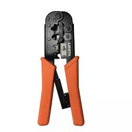

Level 1
Unit of Competence: Identifying and using network hand tools
Unit 1: Basic network overview
Introducing network
A network is a group of computers that are connected to share hardware and software.
In order for the computers to communicate with each
other, they must share three elements:-
- Topology is refers to the arrangement or physical layout of computers, cables and other components on the network.
- Protocol is rule by which two or more devices interconnect each other on a network.
- Network media refers to the communication channels used to interconnect nodes on a computer network.
Identifying types of network
A computer network can be categorized by their size mainly four types:-
- PAN(Personal Area Network) is a network arranged within an individual device like mobile data, typically within a range of 10meters.
- LAN(Local Area Network) is cover in a small area such as building,office.
- MAN(Metropolitan Area Network) is a network that covers a larger geographic area by interconnecting a different LAN to form a larger network such as city.
- WAN(Wide Area Network) is a network that extends over a large geographical area such as states or countries in other WAN internet.
Identifying forms of ethernet cables
- Straight through
is a wired cables are most
commonly used to connect a host to a client in other word use to connect different device.connecting a switch
directly to another router, or connecting a router to a switch.
Wire pins for cable end A Wire pins for cable end B 1.White orange 1.White orange 2.Orange 2.Orange 3.White green 3.White green 4.Blue 4.Blue 5.White blue 5.White blue 6.Green 6.Green 7.White brown 7.White brown 8.Brown 8.Brown - Crossover
are most commonly used to connect two hosts directly in other word use to connect same device like connecting a switch
directly to another switch, or connecting a router to a router.
Wire pins for cable end A Wire pins for cable end B 1.White orange 1.White green 2.Orange 2.Green 3.White green 3.White orange 4.Blue 4.Blue 5.White blue 5.White blue 6.Green 6.Brown 7.White brown 7.White brown 8.Brown 8.Brown - Rollover
most commonly called rollover cables, have opposite Pin assignments on each end of the
cable or, in other words, it is rolled over. used to connect to a device's console port to make programming
changes to the device.
Wire pins for cable end A Wire pins for cable end B 1.White orange 8.Brown 2.Orange 7.White brown 3.White green 6.Green 4.Blue 5.White blue 5.White blue 4.Blue 6.Green 3.White green 7.White brown 2.Orange 8.Brown 1.White orange
Unit 2: Identification and use of network hand tools
List of network hand tools:-
- Wire cutter or wire stripper
- Crimping or cutting tools
- Pump pliers
- Skinning knife
- Diagonal cutting pliers
- High-leverage cable cutter
- High-leverage side-cutting pliers
- Standard long-nose pliers (both side-cutting and skinning)

Network tester
A network cable tester is an electronic device that measures the conductive between two ends of a cable. Its primary purpose is to verify the physical connections and wiring within a network infrastructure, ensuring proper installation for optimal data transmission.

Toner probe
A toner probe is used to trace network cables between two different locations. For example, if you have 50 cables going from an office to a wiring closet, you sometimes need to identify both ends of the same cable. You can connect the component that creates the tone to one end of the wire in the office. Next, you go to the wiring closet and begin touching the speaker probe to different wires. When you hear the tone, you have found the wire.

Crimper
A crimping tool is a device used to conjoin two pieces of metal by deforming one or both of them to hold each other.
Wire Stripper
This tool is used to remove the outer and inner jackets of the network cable.

Multimeter
A digital multimeter is a test tool used to measure two or more electrical values—principally voltage (volts), current (amps) and resistance (ohms).
Punch down
is also called a krone tool, is a hand tool used to connect telecommunications and network wires to a patch panel, punch down block, keystone module, or surface mount box.

The following general precautions are required of the employees:-
- Value your life before personal possessions
- Cooperate with your fellow employees. Show them the safe way to perform work
- Do your work safely. Do not take chances which could result in personal injury
- Ignorance is no excuse for an accident
- Use the correct tools, or equipment, when performing any job
- All tools and equipment shall be visually inspected before use
- Unauthorized personnel are not allowed in the work areas and etc..
Work with others
In the workplace, everyone interacts with each other. This is how society organizes itself and communicates together at work. These relationships are valuable for the opportunities they create to improve performance of individuals, as well as benefiting them, by creating a more useful and interesting place to work.
There are five critical activities that anyone creating a workplace relationship needs to be aware of:-
- Show Commitment
- Be Interested in Others
- Create Trust
- Smile like you mean it
- Make lunch time social time
- Know your limits
Tips to achieve a more productive and satisfactory work environment:-
- Communicate often
- Be available to answer questions
- Provide learning opportunities
- Encourage coworkers to assume responsibilities
- Allow coworkers to express their ideas
- Be open-minded
- Prioritize tasks
- Take breaks and etc...
Why is it important to help others at work?
- Morale: Kindness in offering help when needed can improve morale
- Support: When you support your colleagues, they may be more likely to support you
- Leadership: Helping others is an important quality for developing leadership skills
- Health: A happy work environment can reduce stress and improve your health.
- Productivity: When colleagues support each other and work as a team, they are often able to work more
Tips for helping and supporting colleagues at work:-
- Communicate often
- Recognize their challenges
- Volunteer your time
- Give advice
- Build a relationship
- Offer praise
- Perform an act of kindness
- Inspire positivity and etc...
Sharing Relevant Information
Communication methods:-
- Instant messaging (Slack, Google Chat, etc.)
- Company wiki
- Google Docs
- Stand-up meetings
- Team meetings
- All-hands meetings